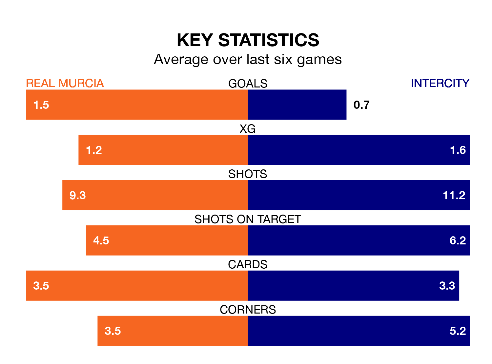

Real Murcia face Intercity on Sunday seeking to protect their long unbeaten run in Primera Division RFEF Group 2.
Murcia are unbeaten in six, with three wins and three draws, ahead of the 3pm kick-off.
They face an Intercity team who have won one and drawn two over the same number of games.
With 24 goals in 23 games so far this season, Murcia are scoring at below the league average rate with 1.0 goals per game. But they are conceding fewer than average too, letting in 23 goals at a rate of 1.0 per game.
Intercity, meanwhile, are average scorers, with 1.1 goals per game. They have also conceded 1.1 goals per game.
The home team are sixth in the table after 23 games, of which they have won nine and drawn seven, earning 34 points.
The visitors are three places behind Murcia in ninth, with eight wins and eight draws putting them on 32 points.
In the last five years, Murcia and Intercity have played each other on five occasions. Murcia won two of them, Intercity one, and they drew twice.
On average, Murcia scored 1.0 goal and Intercity 0.4 in those matches.
Their last meeting was on November 18, when they played out a 0-0 draw.
Murcia's last match was on February 10, a 3-2 win against CD Alcoyano.
Intercity beat Algeciras CF 1-0 last time out, also on February 10.
Updated: 13:30 (UTC), 12/02/24